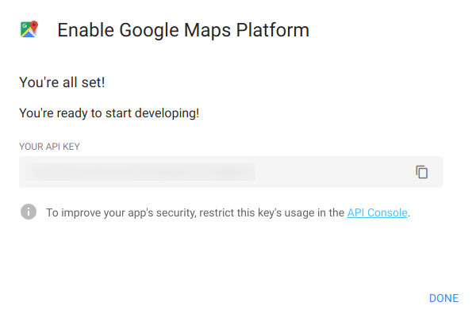

Geocoding with Googleway¶
date: 2017-05-30
Geocoding is the process of taking an address, postcode, or other human–readable identifier and converting it into coordinates. Here I use the Google Geocoding API which I access within R with the googleway package.
Obtain a Google Geocoding API key¶
To use the Google Geocoding API service we need an API key:
Open the Get API Key page
Click Get Started
When asked, you need to enable the
Placesproduct. Tick this and press ContinueSelect or create a project. If this is the first time you’re using this service you will need to create a new project. Type a project name and press Next
You’ll need to set up a billing account and provide a debit or credit card. You can limit the API key use, but I can’t see a way around having to provide it.
Follow the prompts and click Next or Continue
You’ll be told, ‘You’re all set’, and be presented with your API key.

Google Geocoding set up¶
Restrict the API key¶
At this point it’s worth limiting your API key to prevent misuse.
You can set up a cap on usage to make sure you don’t overspend. Recommended.
You should restrict use of your API key, for example for requests to only originate from your domain or computer.
Click on Navigation menu () > APIs & Services > Credentials
Click on Edit API Key ()
At the very least, click on API restrictions and restrict your API key to only the Geocoding API
You can optionally set Application restrictions, such as permitting queries only from a specific IP address (useful if you have a fixed IP)
Using your key¶
One way to use your API key is to store it in a text file that is not kept with your data analysis. That way you can still share the data analysis script or results without sharing the key.
For example, add keys/ to .gitignore so that folder isn’t
tracked and shared, and place your key in there. Load it with
readLines().
Alternatively set an environment variable with your key, for example
GEOCODE_TUTORIAL_KEY which you can then load in to your R session
with Sys.getenv:
gkey = Sys.getenv("GEOCODE_TUTORIAL_KEY")
Set up your human–readable addresses¶
You now need to wrangle your address data into a form the Geocoding API
can understand. For example, it’s common to have a data base with a
field for town and a field for country, like the addresses data base
below:
town |
country |
|---|---|
Sheffield |
England |
Manchester |
England |
Glasgow |
Scotland |
Cardiff |
Wales |
The Geocoding API expects a single string per query, so we need to join
the two items. As it happens, paste0() is vectorised:
address_strings = paste0(addresses$town, ", ", addresses$country)
address_strings
## [1] "Sheffield, England" "Manchester, England" "Glasgow, Scotland"
## [4] "Cardiff, Wales"
addresses is now ready to geocode.
Storing the results¶
I don’t know of a vectorised way to geocode a number of addresses, so
I’m going to use a for() loop. We’re limited to the number of times
we can query the API server per second anyway, so this isn’t going to be
a problem.
As with all for() loops in R, we should create an empty vector and
replace values rather than append each time. See Efficient R
Programming
for why this is a good idea.
lat = vector("numeric", length = nrow(addresses))
lng = vector("numeric", length = nrow(addresses))
Geocode¶
To perform the actual geocoding, we loop over address_strings and
append the latitude and longitude coordinates to our pre–allocated
vectors. I also check that the query returned OK; if it hasn’t I
simply enter a missing value (NA) which can be fixed later (manually
if necessary). Finally, sometimes the API returns multiple results so
I’ve selected the first one. This tends to happen if the query isn’t
specific enough (for example ‘Manchester’ might return Manchester, UK
and Manchester, New Hampshire, USA). Again, these can be fixed later if
necessary.
for (i in 1:nrow(addresses)) {
coord = googleway::google_geocode(address_strings[i], key = gkey)
if (coord$status == "OK") {
coord = googleway::geocode_coordinates(coord)
lat[i] = coord$lat[1] # sometimes returns multiple coordinates
lng[i] = coord$lng[1] # sometimes returns multiple coordinates
} else {
lat[i] = NA
lng[i] = NA
}
}
We can then append our coordinates to our original data frame
(addresses):
addresses$lat = lat
addresses$lng = lng
addresses
## town country lat lng
## 1 Sheffield England 53.38113 -1.470085
## 2 Manchester England 53.48076 -2.242631
## 3 Glasgow Scotland 55.86424 -4.251806
## 4 Cardiff Wales 51.48158 -3.179090